UI71 — تصاویر نسخهٔ فعلیتصاویر آخرین خروجی — UI71
این بسته نسخهٔ فعلیِ قابل بررسی است. اصلاحات تازه روی جدول و تایپوگرافی افتر انجام شدهاند و تعمیم سایر صفحات هنوز باقی است. این صفحه تصاویر رابط را نشان میدهد؛ برای اجرای واقعی، راهنمای READ_ME_FIRST_FA.md را دنبال کن.
تصاویر: مرورگر Chromium 154 با قابلیتهای جدید محدودشده، ارتفاع ۴۰۰، فارسی، دو تم. برای دیدن اندازهٔ اصلی روی تصویر کلیک کن.
جدول · روشن · عرض 250
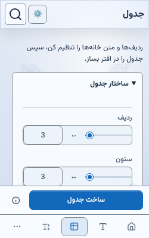
جدول · روشن · عرض 400
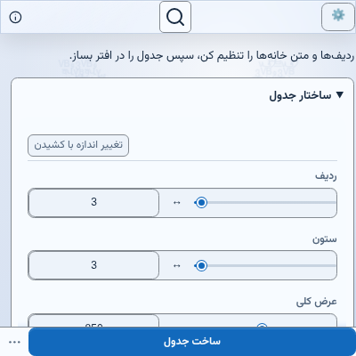
جدول · روشن · عرض 620
جدول · روشن · عرض 1400
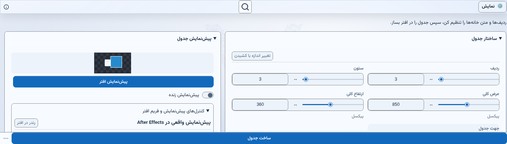
جدول · تیره · عرض 250
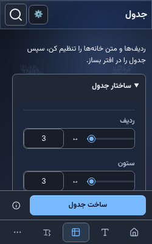
جدول · تیره · عرض 400
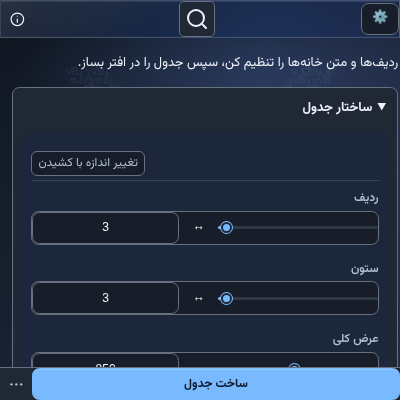
جدول · تیره · عرض 620
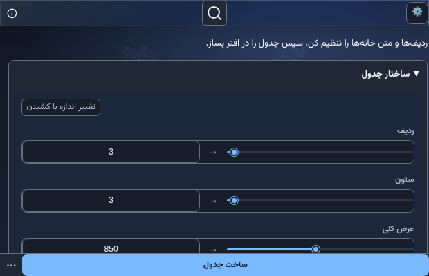
جدول · تیره · عرض 1400
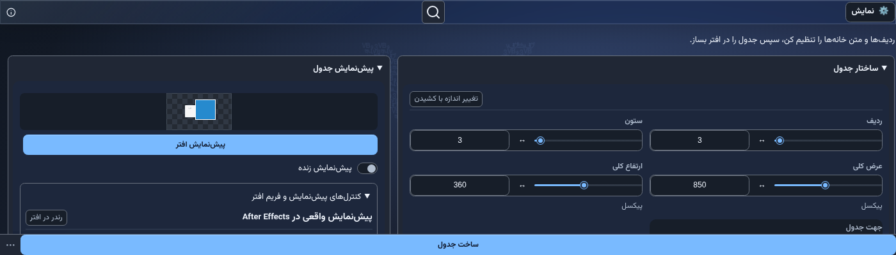
تایپوگرافی · روشن · عرض 250
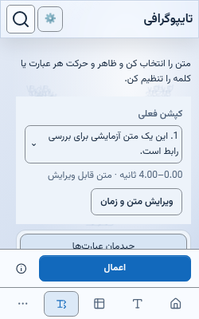
تایپوگرافی · روشن · عرض 400
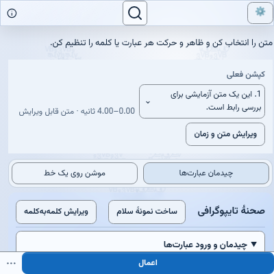
تایپوگرافی · روشن · عرض 620
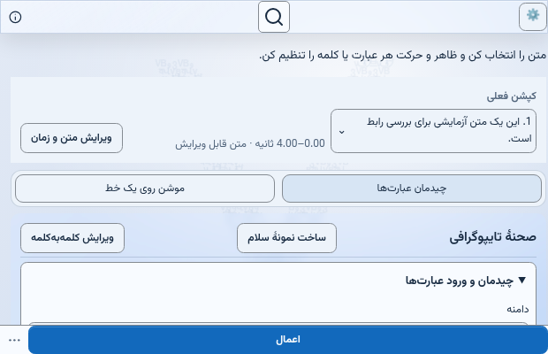
تایپوگرافی · روشن · عرض 1400
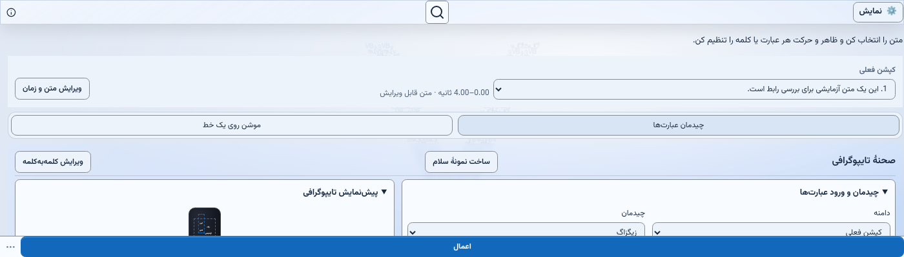
تایپوگرافی · تیره · عرض 250
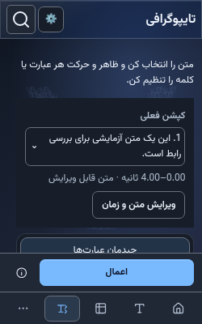
تایپوگرافی · تیره · عرض 400
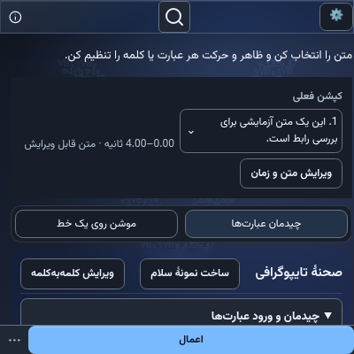
تایپوگرافی · تیره · عرض 620
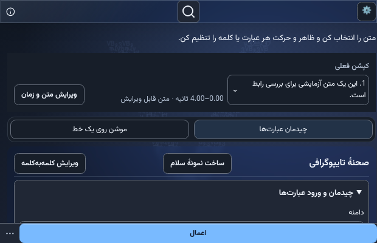
تایپوگرافی · تیره · عرض 1400
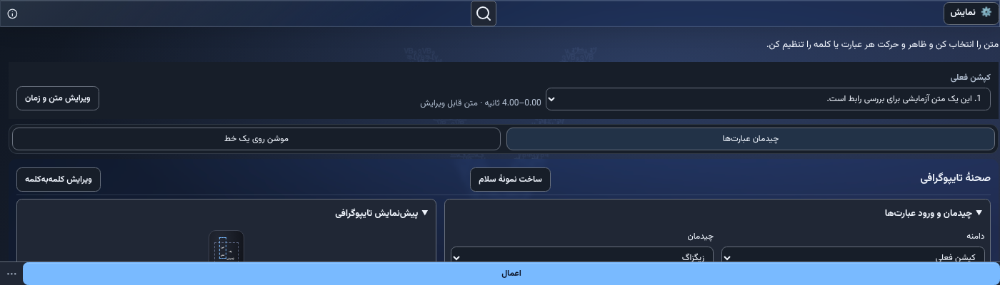